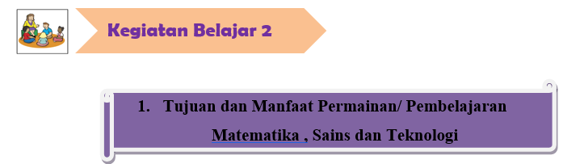
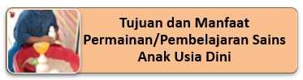
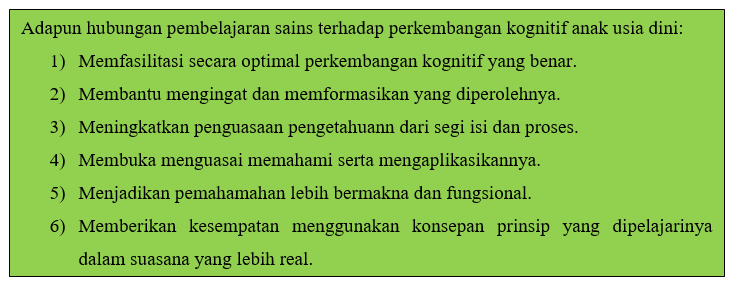
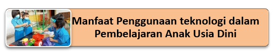

a. Tujuan Umum
Agar anak mengetahui dasar-dasar pembelajaran berhitung/ matematika, sehingga pada saatnya nanti anak akan lebih siap mengikuti pembelajaran matematika pada jenjang pendidikan selanjutnya yang lebih komplek.
b. Tujuan Khusus
- Dapat berpikir logis dan sistematis sejak dini melalui pengamatan terhadap benda-benda kongkrit, gambar-gambar atau angka-angka yang terdapat di sekitar anak.
- Dapat menyesuaikan dan melibatkan diri dalam kehidupan masyarakat yang dalam kesehariannya memerlukan keterampilan berhitung. Memiliki ketelitian, konsentrasi, abstraksi dan daya apresiasi yang tinggi. Memiliki pemahaman konsep ruang dan waktu serta dapat memperkirakan kemungkinan urutan sesuatu peristiwa terjadi di sekitarnya. Memiliki kreativitas dan imajinasi dalam menciptakan sesuatu secara spontan.
- Dapat menyesuaikan dan melibatkan diri dalam kehidupan masyarakat yang dalam kesehariannya memerlukan keterampilan berhitung. Memiliki ketelitian, konsentrasi, abstraksi dan daya apresiasi yang tinggi. Memiliki pemahaman konsep ruang dan waktu serta dapat memperkirakan kemungkinan urutan sesuatu peristiwa terjadi di sekitarnya. Memiliki kreativitas dan imajinasi dalam menciptakan sesuatu secara spontan.
- Membantu agar anak lebih peka dalam mempelajari tentang membedakan dan persamaan bentuk (selanjutnya termasuk ke dalam klasifikasi ) dilingkungan dan betujuan dapat membedakan satu dengan yang lainya. Anak dapat belajar dari beberapa dasar bentuk geometri itu dimana mereka dapat menunjukkan berdasarkan apa yang ada di lingkunganya ( missal saya meletakkan buku di atas meja yang berbentuk segiempat (Prasetya, 2015).

Jika Anda mencoba untuk mengajarkan semua yang telah dipelajari dalam sains mulai dari prasekolah dan berlanjut setiap hari sampai sekolah menengah kamu hanya dapat membuat sedikit saja dalam tubuh pengetahuan. Tidak mungkin mempelajari segalanya. Namun terlepas dari ini, terlalu banyak guru yang mendekati tugas mengajar anak-anak sains seolah-olah itu adalah tubuh informasi yang dapat dihafal siapa pun. Kenyataannya, hampir tidak mungkin untuk memprediksi informasi spesifik apa yang diajarkan kepada anak usia dini hari ini yang akan berguna bagi mereka ketika mereka mengejar karier melalui abad kedua puluh satu. Sangat mungkin bahwa tubuh pengetahuan sains saat ini akan berubah sebelum seorang anak lulus dari sekolah menengah. Para ilmuwan terus-menerus melihat data dengan cara yang berbeda dan sampai pada kesimpulan baru. Dengan demikian tidak dapat diprediksi dengan pasti fakta mana yang akan paling penting bagi anak untuk dipelajari seumur hidup di tahun-tahun mendatang.
Tujuan utama dalam pembelajaran sains adalah untuk mengembangkan orang-orang yang melek secara ilmiah yang dapat berpikir kritis. Untuk mengajarkan sains kepada warga negara mengenai masa depan, keterampilan proses dan sikap harus ditetapkan sebagai komponen utama dari setiap pelajaran konten sains. Fakta saja tidak akan cukup untuk anak-anak yang dilahirkan ke dunia teknologi. Pengalaman langsung yang menekankan pada keterampilan proses sains sangat penting jika anak ingin menerima manfaat maksimal dari pengajaran sains. Pentingnya belajar sains bagi anak usia dini adalah untuk menanamkan kepada anak bahwa untuk memahami dunia atau lingkungan sekitar melalui proses yang dikenal sebagai penyelidikan ilmiah. Sains AUD juga dapat melatih anak sejak dini agar dapat memecahkan masalah yang ada disekitarnya karena para ilmuwan sains dapat memecahkan masalah seperti air yang tidak bersih, mengapa air menguap dan tanaman tumbuh di lokasi tertentu, atau penyebaran penyakit. Dengan mempelajari Sains AUD, anak-anak dapat dibimbing dalam pemakaian teknologi untuk melayani kebutuhan kita dan kepentingannya.
Pentingnya sains anak usia dini adalah agar anak secara aktif melakukan investigasi tentang dunia mereka melalui belajar dengan melakukan, ini merupakan hal yang paling efektif bagi anak untuk belajar. Investigasi dan pengetahuan merupakan suatu tim yang tidak bisa dipisahkan satu sama lainnya. Selain itu, untuk menolong anak mengembangkan keterampilan melalui inderanya (Mayesky). Mengajar sains di taman kanak-kanak penting karena (1) sains merupakan sarana ideal untuk mengembangkan pikiran anak-anak yang bertanya tentang alam; (2) membantu menerapkan mayarakat melek sains; (3) ketika mengeksplorasi sains, anak-anak akan memperoleh bahasa lisan dan tulisan; (4) sains mengajari anak-anak mengepresiasi keragaman kehidupan dan saling keterikatannya; (5) mendorong anak cinta sains dan bertidak sebagai ilmuwan (George S. Morrison).
Kegiatan sains merupakan peluang menarik untuk menerapkan teori Vygotsky tentang scaffolding dan penerapan sains semakin memainkan peranan penting di kurikulum Taman Kanak-kanak, karena melalui kegiatan sains anak-anak akan menikmati aktivitas mereka, untuk merasakan bahwa mereka mampu, dan untuk menyempurnakan apa saja yang telah ia dapat baik yang telah mereka ketahui sebelumnya juga hal-hal yang baru. Konsep-konsep ilmiah membantu anak-anak untuk memahami lebih baik dari apa yang mereka alami sehari-hari mereka seperti menyeka meja atau membuat selimut untuk tempat tidur boneka mereka (Claire, etc). Dalam hal ini berarti diharapkan pembelajaran sains tidak saja menyelesaikan masalah yang berkaitan dengan anak sehari-hari tapi juga membantu mereka menciptakan produk yang bisa mereka rasakan manfaatnya.
Adapun hubungan pembelajaran sains terhadap perkembangan kognitif anak usia dini:
- Memfasilitasi secara optimal perkembangan kognitif yang benar.
- Membantu mengingat dan memformasikan yang diperolehnya.
- Meningkatkan penguasaan pengetahuann dari segi isi dan proses.
- Membuka menguasai memahami serta mengaplikasikannya.
- Menjadikan pemahamahan lebih bermakna dan fungsional.
- Memberikan kesempatan menggunakan konsepan prinsip yang dipelajarinya dalam suasana yang lebih real.
Pengenalan sains untuk anak usia dini hendaknya dilakukan secara sederhana sambil bermain. Kegiatan sains memungkinkan anak melakukan eksplorasi terhadap berbagai benda, baik benda hidup maupun benda mati. Sains melatih anak menggunakan lima indranya untuk mengenal berbagai benda dan peristiwa.


Mengajak menggunakan teknologi bagi anak usia dini haruslah mempertimbangkan:
- Apakah aktivitas penggunaan teknologi ini sudah sesuai dengan perkembangan anak?
- Apakah aktivitas akan bermanfaat bagi anak-anak,
- Atau apakah kegiatan penggunaan teknologi ini akan menghilangkan aktivitas pembelajaran yang lebih bermanfaat?
Manfaat penggunaan teknologi dalam pembelajaran di Taman kanak-kanak jika memperhatikan hal-hal sebagai berikut.
- Teknologi memungkinkan pembelajaran dan penemuan
- Dengan pembelajaran proyek aktif terbuka, yang memungkinkan pembelajar maju dengan tingkat kecepatannya sendiri.
- Teknologi yang diterapkan komputer muerupakan bagian dari kelas, bukan perangkat di tempat terpisah atau di lab.
Teknologi dapat menyenangkan dan menarik, dan jika digunakan secara tepat, sehingga dapat meningkatkan pangalaman pembelajaran anak.